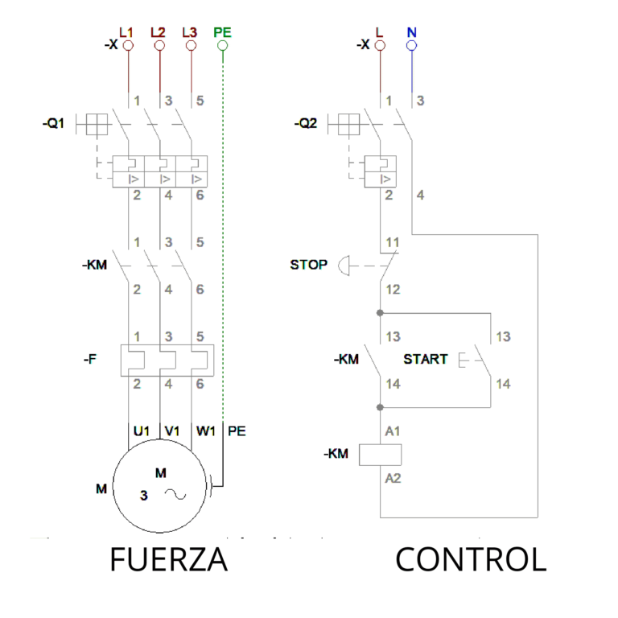
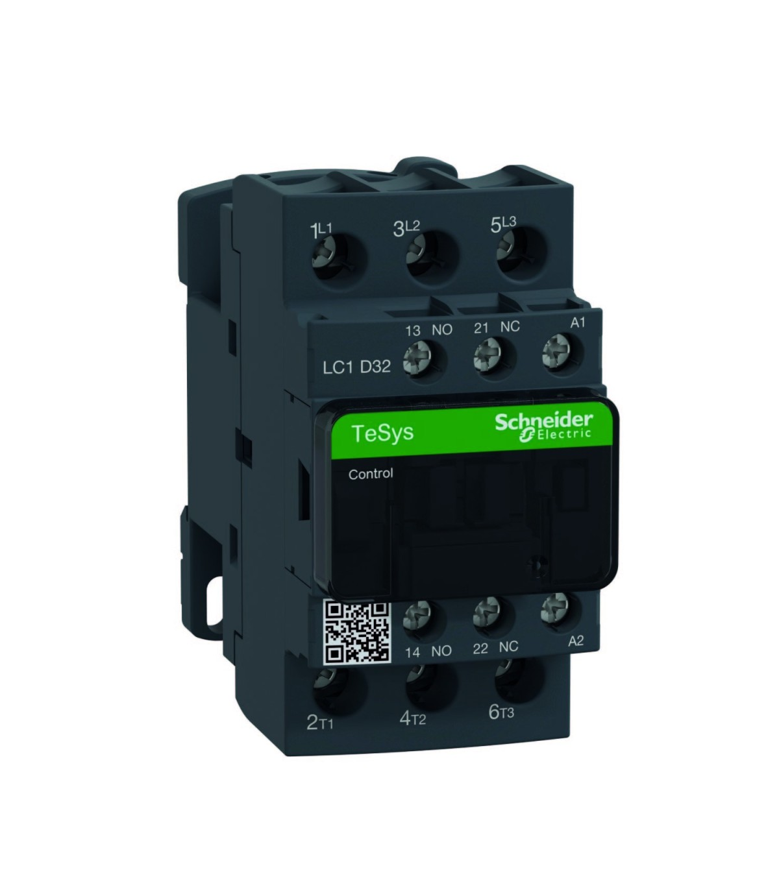
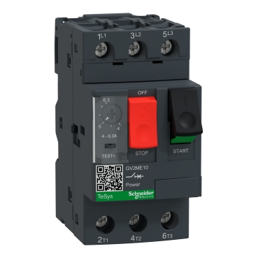
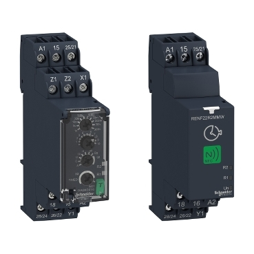
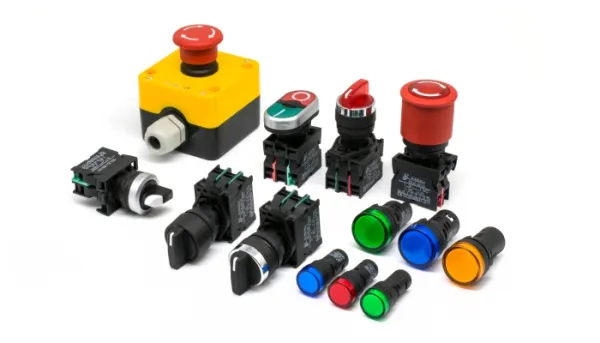
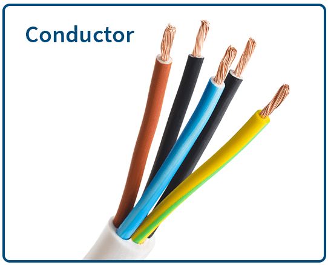
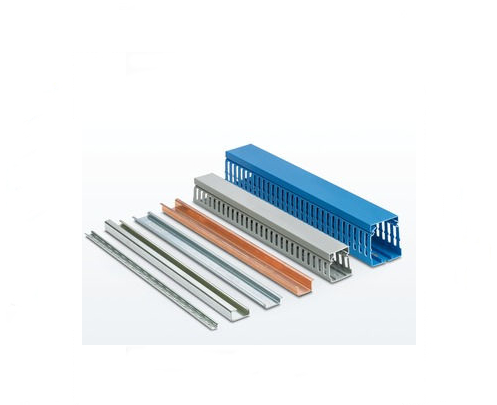

Entendemos por comandos eléctricos a un conjunto de elementos, técnicas y métodos utilizados para controlar, operar, automatizar y proteger máquinas y equipos eléctricos. Esto lo conseguimos gracias a una serie de elementos que, dispuestos de la manera correcta, controlan el paso de la electricidad. Logrando de esta forma activar o desactivar distintos equipos eléctricos. Por lo general, estos se separan en dos partes, el circuito de potencia o trabajo y el circuito de comando o control.

Un circuito de potencia (o de fuerza) es la parte de una instalación eléctrica diseñada para suministrar energía a receptores de alto consumo, como motores trifásicos, transformadores o resistencias. Maneja altas tensiones y corrientes, conectando directamente la red eléctrica con la carga, incluyendo elementos de protección como fusibles, interruptores termomagnéticos y contactores.
Un circuito de control es la parte de un sistema eléctrico o electrónico responsable de tomar decisiones, gestionando el encendido, apagado o regulación de cargas de potencia (como motores) mediante señales de bajo voltaje ej. 12V, 24V, 110V. Utiliza componentes como pulsadores, relés, sensores y PLCs para gobernar el proceso, diferenciándose del circuito de fuerza que maneja alta corriente.
Un contactor es un dispositivo electromecánico de conmutación diseñado para abrir o cerrar circuitos de alta potencia a distancia, comúnmente usado para arrancar motores, controlar iluminación o cargas industriales. Funciona mediante una bobina magnética que activa contactos, permitiendo gestionar grandes intensidades con un circuito de control de baja corriente.

Un disyuntor (o interruptor magnetotérmico) es un dispositivo de seguridad eléctrica diseñado para cortar automáticamente el flujo de corriente ante sobrecargas o cortocircuitos, protegiendo los cables y la instalación de incendios. A diferencia del interruptor diferencial, que protege a las personas de fugas, el disyuntor protege la instalación.

Un relé temporizador (o relé de tiempo) es un dispositivo electrónico o electromecánico diseñado para abrir o cerrar contactos eléctricos tras un intervalo de tiempo programado, automatizando el control de cargas. Es fundamental en automatización industrial, motores, iluminación y temporización de procesos.

Las botoneras y señalizadores son componentes esenciales en el control industrial para la interacción entre operarios y maquinaria. Mientras que las botoneras permiten ejecutar acciones manuales, los señalizadores proporcionan retroalimentación visual o auditiva sobre el estado del sistema.

Los conductores eléctricos son materiales, principalmente metales como el cobre y el aluminio, que permiten el flujo libre de electrones en un circuito. El cobre es el más utilizado por su alta conductividad, flexibilidad y bajo costo. La selección adecuada del material, calibre y aislamiento es crucial para la seguridad y eficiencia, evitando caídas de voltaje.

Las canaletas ranuradas y los rieles DIN son los elementos fundamentales para el montaje estructural, la organización del cableado y el soporte de componentes dentro de tableros eléctricos y gabinetes de automatización.
